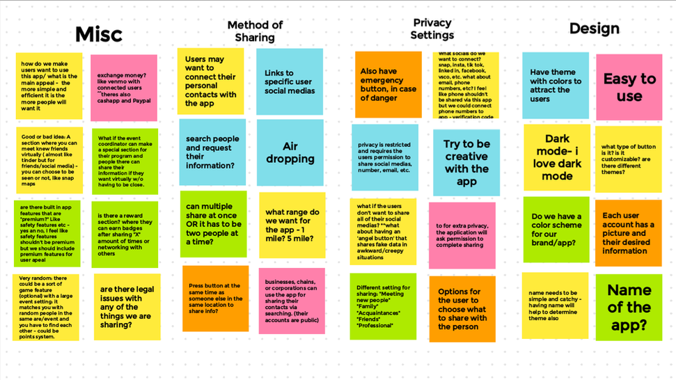

I ♥ Coding!
People need a better way to connect in large groups (i.e. college) and the ability to share social media and personal information. Depending on the environment (i.e. large crowds), people may encounter situations where getting multiple people’s socials can be a difficult process.
